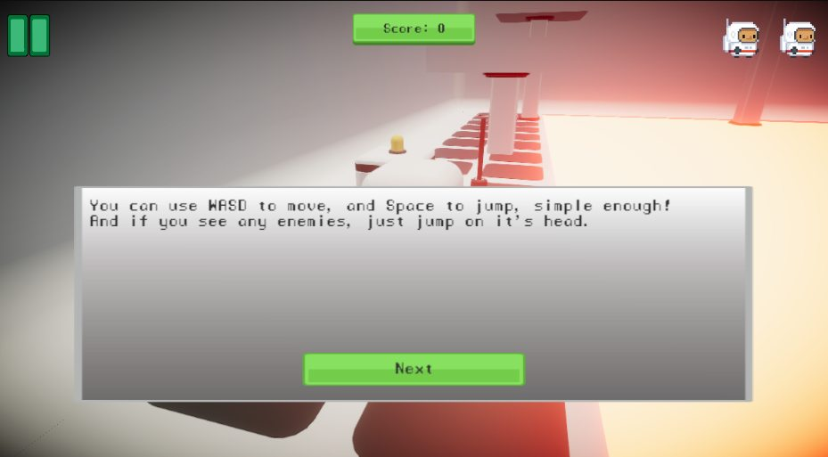

Crystal Stealer
Take control of an astronaut and collect three crystals in a focused 3D platforming challenge.
3D · PlatformerBrowser / Windows / macOSReleased

Play Crystal Stealer
Choose a platform below for the game and available downloads.
About the game
An astronaut platformer built for Coursera’s 3D Platformer course. Two added levels put the crystal hunt across lava hazards, with tutorial text and post-processing effects.
Credits
Made by Iliya Soleimani using assets from MSU.